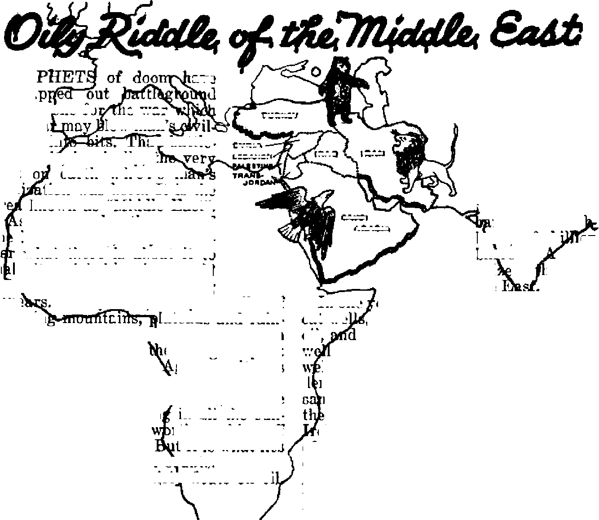

A sobering look at conditions in Catholic countries
Prophets of doom call it the fuse for World War III
Religion’s star performers fajl to shine in court in Jehovah’s witnesses’ case
Science cannot erase or minimize the miracle
THE MISSION OF THIS JOURNAL
News sources that: are able to keep you awake to the vital issue® of our tirnes must be unfettered by censorship and selfish interests. “Awake!” has no fetters. It recognize® facts, faces facts, is free to publish facts. It Is not bound by political ambitions or obligations ; it is unhampered by advertisers whose toes must not be tread upon; it is unprejudiced by traditional creeds. This journal keeps itself free that it may speak freely to you. But it does not abuse its freedom. It maintains integrity to truth.
“Awake I” uses the regular news channels, but is not dependent on them. Its own correspondents are on all continents, in scores of nations. From the, four corners of the earth their uncensored, on-the*scenes reports come to you through these columns. This journal's viewpoint is not narrow, but is international. It is read in many nations, in many languages, by persons of all ages. Through its pages many fields of knowledge pass in review—government, comfnerce, religion, history, geography, science, social conditions, natural wonders—why, its coverage is as broad as the earth and as high as the heavens.
“Awake I” pledges itself to righteous principles, to exposing hidden foes and subtle dangers, to championing freedom for all, to comforting mourners and strengthening those disheartened by the failures of a delinquent world, reflecting sure hope for the establishment of a right* ecus New World.
Get acquainted with “Awake 1” Keep awake by reading “Awake 1”
Published Semimonthly By WATCHTOWER BIBLE AND TRACT SOCIETY, INC.
117 Adams Street Brooklyn 1, N. I"., U. S. A
N. H. Knorr, President Grant Sluter, Secretary
Five cent* a copy One dollar a year
RrtiltHnm should be sent U) office in year country In compliance with rerulatlwB to guarantee Bale dethery of money. Remittances tn accepted at Brooklyn from countries where no cffice Ik located, by international mooey order only. Subscription nta Id different ooimtrlu art her* anted la local currency.
Nttlct of uplntta (with renewal blank I b seen at least two Issue before aulMcrlpLkti ntplra
Chink! *f addritt when sect tn olir office may be expected effuedre within one mondr, your old ss well as new address.
Offices Yearly Subscription Rate
America, U.S., 117 Adame St.T Brooklyn 1, N.Y. *1 Australia, 11 Beresford Rd., Strathfleld, N.S.W. 0g Canada, 40 I nr in Are,, Toronto 5, Ontaric $1 E*|land, 34 Craven Trracw, London, W. 2 5b $Mth Africa, 623 Boston Itaise, Caps Town Ge
Entered as aecoukclua matter at Brooklyn, N. I., Act of March 3, 187&. Printed In U, A A.
CONTENTS
Frightful Report from Colombia
“Our Teaching Is Often Different
Oily Riddle of the Middle East
The Bear Sniffs at the Lion’s Share
Where the Eagle Spreads Its Wings
“Thy Word Is Truth”
Israel’s Crossing of the Red Sea
Norway Ts Trials Against Collaborators
C^Now it is high time to awake.— Ramans 13:119j
Volume XXX
Brooklyn, N. Y., April «, 1*4*
Numbar 7
THE POPE AND MORALS
RECENTLY Pope Pius XII made another speech. This time it was on uprals, the protection of young women and girls against the degeneracy and moral delinquency of the age. Addressing 200 delegates from 19 nations on September 29, 1948, the pope declared: “It is no longer a question of saving one lamb, or a hundred, but a whole herd." The blame for this immorality he places at the door of the educational systems by saying: “Modern education produces only a thin varnish of religion that does not protect from imprudences, concessions, and capitulations that may be the beginning of a total moral collapse.” Again, in addressing an Inter-American assembly of Catholic educators at La Paz, Bolivia, on October 6, the pope expressed the hope that youth “would be guided by the experience and wisdom of the church, following the standards promulgated by this apostolic see".
Catholic parents, in fact all decent parents, are very much concerned over the terrible situation their children face in the world today, and they heartily welcome any protection offered. However, before placing their children’s chastity under the guardianship of those that wear somber ecclesiastical dress parents will do well to investigate the clergy’s qualifications for such a responsible trust. Before replacing the “thin varnish of religion" given by modern secular education it would be well to see if those that are given a heavier coating of religion in the parochial schools are any better morally. Before giving their children “the experience and wisdom of the church” as an example to be followed parents will do well to visit Catholic countries, like those of Latin America, where the Roman Catholic Hierarchy not only has reigned supreme for centuries but also has been the example followed by the people.
For the benefit of those who will never have the opportunity of traveling abroad, Awake! correspondents living in these Catholic countries, and who by their firsthand contact with the people know conditions as they are, have gathered together a volume of facts and figures* It is from these reports that the following sobering and eye-opening facts are taken. Read them thoughtfully and see if the thicker coating of religion given the children in these Catholic countries provides them with a better insula* tion against the burning heat of sexual immorality.
Conditions in Puerto Rico
After four centuries of Catholic pre dominance in Puerto Rico, churches, priests and nuns abound in great profusion. One would, therefore, expect that the island is a secure haven for young girls. But what do we find! In a land where the population is 89 percent Catholic, 1 out of 4 babies is an illegitimate; in some towns 2 out of 5 are such. Thirtyeight percent of the mothers bearing
these unlawful children are between 15 and 19 years. Cross-checking 430 fathers of these children showed that 27 percent were already married to other women; 65 percent had children by two or more women; and 5 percent had children by five or more women. Social workers have found men living with three different women at the same time.
Mind you, these poor Puerto Ricans are not savages of the jungle, not pagans of the Far East, not “heretics” of so-called protestantism, and most assuredly they are not true followers of Christ Jesus and His teachings. Rather they are “children of the Holy Catholic Church”—born Catholics, raised Catholics and taught as Catholics for generations by Rome's priesthood! It is common knowledge among the people that the priest has his own female consorts, which the people call his esposas a la izquierda, his “wives on the side”, sometimes called by the priest his “fleshly sisters”. So, the common Puerto Rican reasons: Why should I not have a few “wives on the'side”? Was it not the Catholic bishop of Osma that countersigned the decree of Charles V of Spain on August 4,1526, making whoremongering legal, and establishing “a house of public women” in Puerto Rico?
Immorality in Mexico
It is reported that in Mexico city itself there are 64,000 prostitutes, and among them are little girls only 12 years old. When a medical checkup was made down three of the capital's streets it was found that 91 percent of these misfortu-nate women were syphilitic. Though the union of church and state no longer exists in Mexico the majority of the people are nominally Catholics and follow their clergy as shepherds of the flock. If, then, the shepherds wander from the way of righteousness, is it any wonder that not “one lamb, or a hundred, but a whole herd” have fallen into the snare of sexual immorality?
It was reported in the press, September 5, 1947, that a soldier complained to the bishop of Sonora, Don Juan Navar-rete, that the priest of Ures had criminally violated the honor of his daughter. A few months before this, in the town of Petatlan, on the coast of Guerrero, the people were greatly alarmed over the return, after a two-year absence, of a priest named Manuel Herrera^Murgufa. Said the newspaper Tiempo (May 23, 1947): “Many of the young men of Petatlan complain that the priest would take undue advantage of their girl friends, when placed in the curacy just previous to marriage.” Another reported ease was as follows:
A number of families of Puebla, sincere Catholics, are considering speaking to the archbishop of the diocese to petition the removal from the city of the priest of the church of San Jos6, the priest Jose Rubio Contreras, nicknamed The Satyr, because of his dissolute life. The scandalous life of JRC is public information in Puebla. For h good many years the old priest would be seen in many places, Openly, and always accompanied by young women, whom he would introduce as his nieces. Many people of Puebla have seen him in hotels of ill repute in the city and in cabarets and night clubs in Mexico City, on noisy sprees. . . . What is surprising to all the people of Puebla, believers and unbelievers, is that the archbishop of Puebla, who well knows of the priest’s adventures, permits him to continue his noisy life.—Tiempo, July 25, 1947.
Guatemala’s Report of Woe
It is estimated that 70 to 75 percent of the children are born of parents that have never been married. A civil marriage can be had free, but why bother, the people say, since they would be living in adultery anyway, according to Church teachings. Besides, the priests get away without getting married. One priest was frequently seen visiting a bawdyhouse, yet no protest was raised until he entered during ‘Tioly week”, and,
A WAKE I
of ail days, on “Good Friday”! It seems the day is too sacred for devout Catholics that live in adultery to have sexual intercourse, but not so for the priest!
The chief way of covering up the grosser immoral sins of the clergy is to transfer offending priests to other parishes where their record js not known. However, those upon whom the crimes are committed remain behind, and soon the people in general know the details. Hence, one has only to move among the people to learn the facts. For example, in one mountain village a priest caused a young girl to become pregnant. When-the child was four months along the priest talked an illiterate young fellow of the village into marrying the girl. Then, some five months later, when the baby was born and the bewildered man asked the priest why a baby arrived in so short a time, he was asked: “Who are you to question God!” Making it appear as a miracle the priest had the couple move dose to the parish house, whereupon the priest continued having secret affairs with the wife.
Evil practices and conditions such as these over a long period of time have brought Guatemalans down to a very deplorable level of sorrow *and suffering, especially the women and children. Look at some of these 18-year-old mammas. Young, yet so old-looking! Their faces are drawn, their hair unkempt, a baby tied up in rags on their back, a tiny tot toddling alongside, and still another child awaiting birth, each having a different father, and in many eases, a father whose name is unknown. A sad but common sight.
Truly, the most pitiful sight is the children themselves. In the nude they crawl around and paddle in places where we would hesitate to step. Infant mortality is very high; many never have a fighting chance. Little waifs, they learn to steal at a tender age; necessity is the mother of their crimes. Others are lovable little children with warm brown eyes APRIL 8, 1949
and friendly smiles, eager to help you, eager to learn, proud they can read and write, and yet—poor children—they have never learned to say “daddy", and have never known the love and companionship of a father.
Honduras* Sinful Crop
It is almost unbelievable, but according to the 1945 census figures 55 percent of the total population of 1,200,542 are illegitimates. And this in a country that is percent Catholic! Instead of conditions’ getting better they are getting worse, for during the fiscal year of 1945-46, 64 percent of the 46,354 births were illegitimate babies. Couples just live together until they tire of each other, and then seek other companions. Children crop up like weeds. One woman may have children from two or three or four different companions. Like kittens, the babies are given away to friends to be raised and educated; others are sold.
Who is to blame for this immorality in sexual matters! The people themselves, yes, to a certain extent, but the priesthood of the Catholic church must bear a large share of responsibility because of their own examples of immoral looseness. The history of the little towns and villages tells how the priests have lived with their women. In the mountain hamlets they have raped and ruined their share right along with the most debased peon of the countryside. One history of the nineteenth century says:
The state of Honduras . . . passed a law legitimizing all the children of priests, entitling them to bear the names and inherit the properties of their fathers and declaring the cohabitation of priests with women to be an evidence of marriage in every legal sense and subjecting them to all its responsibilities. —Honduras: Descriptive, Historical & Statistical, by E. G. Squier.
Obviously, such a law would have been unnecessary had Rome's priests refrained from cohabiting with the women and bringing forth a crop of offspring.
5
As of old, conditions in this respect continue. In San Pedro Sula there is a young lady that everyone knows is the daughter of the local “padre”. Until recently the priest in Tela regularly visited his woman and child at his country home called “Rosalania”, and the people look upon it as a light matter. What really stirred them up was when a priest in Tegucigalpa, the capital of Honduras, who, in making his rounds in one of the leading hospitals, tried to rape a young girl.
El Salvador, Wasteland of Immorality
In this small country the facts and conditions reduce the pope's plea for youth to follow the exemplary “experience and wisdom of the church” to a small shrill wind wailing through the night of a wasteland of sexual immorality. Instead of conditions' being made better under the dominant religion, which so gallantly claims to be dedicated to the cause of morality and social justice, the standard of human behavior in El Salvador has grown worse under Roman Catholic influence.
According to the prominent paper El Diario de Hoy (August 4, 1948), out of every 100 babies 68 are illegitimates, and 35 are completely dependent on their poor mothers for support Children are here conceived and born like rodents. It is not at all uncommon for a newborn infant to be abandoned. It is commonplace to hear of a fetus or stillborn babe tossed onto the garbage pile or thrown into the refuse container. A woman that has several children very rarely has them all by the same man,
A Mrs. Alvarez tells of her personal knowledge of how priests in the cities of La Merced and La Vega carry on illicit relations with women m their parishes. Another housewife, Rosa Montero, tells of a disgusting experience she had on a bus when a priest made advances toward her, even following her home when she fled the bus. When a child was trampled to death by a stampeding theater crowd in Mejicanos, the newspapers disclosed that the child’s father was the prominent priest of the city. In the city of Santa Ana it is reported that the priest of the Calvario church ■ raped a minor girl of his catechism class, and the priest of San Lorenzo church made a minor of his parish pregnant. When a lawyer discharged a young man from his employ the priest came to him and pleaded that the young man should be taken back. The reason given by the priest; the youth was his own son!
Costa Rica's Confession
Stories about the rapacious conduct of Catholic priests are numerous among the people. Within recent months many priests have been sent to other parishes to escape the wrath of parishioners caused by their immoral relations with single girls, A German girl who came here frqm Mexico, feeling the need of some spiritual advice, poured out her troubles to a German priest, hoping thereby to receive some consolation. Imagine her terror when this so-called “man of God” proposed that she enter improper sexual relationship with him as a cure for her troubles!
One young woman telling another about her child which she had by her priest said the boy had no father, for he had been “begotten by the holy spirit”. It is things like this, no doubt, that made a devout Catholic, who is a postal employee in San Jose, declare: “The priests should be forced to marry if they want female companionship.”
The Costa Rican birth statistics for 1947, while much better than some other Catholic countries, show that it is no ideal model to be followed. Of the 41,930 registered births in the. seven principal cities over 23 percent were illegitimates. When these babies are baptized into the Catholic church the only routine question asked is whether the baby is legitimate or illegitimate. If the father*? name is Unknown the child takes the mother’s name.
Is it not rather strange that practices like these on such a huge scale are unheard-of in the so-called Protestant countries? Mundo Nuevo, a monthly, edited and published in San Jose, thinks so when it declares: ‘‘The protestants are more sincere on sex matters; ail of them, including the preachers, marry. Luther married a nun ,.. made her his wife and not his concubine. Nevertheless the [Catholic] clergy condemn adultery whenever it is not they that are prostituting married or single women?’
Frightful Report from Colombia
Colombia is the Vatican’s most faithful and favored child in South America. Her inhabitants, 95 percent, are devout Catholics. Her internal and political affairs have been influenced and controlled by the Roman Catholic Hierarchy, and her educational system has been dominated by priests and nuns for generations. The Catholic priesthood still enjoys a most exalted position in the life of the average Colombian. But alhs! has this great ecclesiastical power and influence been used to protect the chastity of women and girls? Or has the education of youth by the clergy raised the moral level of the people!
According to 1946 census figures, out of 340,790 births 29 percent were illegitimates. The facts belie the argument that where the people are steeped in Catholicism there is less sin; for in the city of Medellin, the Catholic stronghold of Colombia, the highest number of harlots are to be found. There are twenty blocks devoted to this abominable industry in this one city. The “Church” simply winks at such things. When members of the clergy are caught in moral delinquency the “Church’s” attitude is as set out in a 120-page book written and published in Colombia by Margarita Encines.
Therein Margarita tells -of a poor girt that was attacked by a priest. When this girl tried to bring the crime to the attention of the archbishop she was pushed to ene side and advised that the career of a notable priest was worth more than the honor of a young imprudent girl.
Instead of protecting feminine chastity the “Church” protects even those who murder girls to satisfy their base animal passions. Such was the case in Cucuta, Colombia, last August. The killer was not a clerical novice; he was a 50-year-old priest named Gabriel Francisco Obeso, who for the last fifteen years has been chaplain in the hospital of St. John the Divine. For several year# he had lived with a widow, Clementina Munoz, and her two children, Josefina and Pedro. When 17-year-old pretty Josefina decided to marry a young man and put an end to living in sin with “Father” Obeso, the priest determined that if he could no longer have her no one else would, and so he killed her in the most gruesome fashion. One of Colombia’s leading magazines gives the details:
Pedro, the younger brother, went to bed and was awakened after midnight by the cries for help from his sister. He came to the rescue at once and found her bleeding upon the bed of the priest, who, according to her, had hurt her after torturing her, Taken to the hospital, she died hours later, because of 14 stabs received. The body of the victim presented, moreover, traces of violence and the scar of a surgical opening in the abdomen, an operation which the family did not have knowledge of. The autopsy showed that Josefina ,was not a virgin.-—Semana, August 21, 1948.
In civilized countries where there is “only a thin varnish of religion” those that commit such heinous crimes against society are exterminated, but not so in a land that is bound to the Vatican with heavy religious concordats. Says Semana: “According to the agreement of the concordat he [Obeso] is held in confinement in St Joseph's parish house,”
Only the Outside Whitewashed
With this small sample of corrupt ini’ moral fruits (there would be a much larger crop if other areas like Catholic Quebec told their stories) it is most apparent that the papal “experience and wisdom” during the last four hundred years has not bettered social conditions. True, Catholic priests are more discreet in Protestant lands, but if given free rein with unchallenged power and authority over the whole land the clergy grow lax and careless in their moral conduct. If the pope is sincerely grieved over the dangers that threaten young women, why does he not strike where the danger is the greatest? Why does he not take drastic action to prevent members of his own priesthood from robbing girls of their virginity? Why does the papal organization give aid and comfort, and even sanctuary, to such scoundrels and priestly “fathers” as Obeso and his kind? “Fathers” is right, and not in any spiritual sense!
Honest Catholic parents, who love decency and hate iniquity, are not offended when confronted with these facts. They see what Jesus meant when He said to a similar crowd of clergymen in His day:
Alas for you, you hypocritical scribes and Pharisees, for you clean the outside of the cup and the dish, but inside they are full of greed and self-indulgence. You blind Pharisee ! You must first clean the inside of the cup and the dish, so that the outside may be clean too. Alas for you, you hypocritical scribes and Pharisees, for you are like whitewashed tombs! They look well on the outside, but inside they are full of the bones of the dead, and all that is unclean. So you outwardly appear to men to be upright, but within you are full of hypocrisy and wickedness-Matthew 23: 25-28, An American Trans.
"(9ur Teaching Is Often Different from the Bible”
How well the master minds of Roman Catholicism realise the essential contradiction between the Bible and the Roman Catholic system is forcefully expressed in an address delivered by the cardinals of the Roman Court to Pope Julius III in 1550 immediately after his elevation to the papacy. It is
contained in a historical document of Reformation times that is preserved today in the National Library of Paris in Folio B, No. 1088, Vol. 2, pp. 641-650. Jt contains amopg others the following interesting passages: “Of all the advice that we can offer Your Holiness, we have kept the most necessary to ,the last. We must open our eyes well and use all possible force in the matter, namely, to permit the reading of the Gospel as little as possible especially in the vernacular, in all those countries under yonr jurisdiction. Let the very little part of the Gospel suffice that is usually read in the Mass and let no one be permitted to read more. So long as the people will be content with that small amount, your interests will prosper, but as soon as the people want to read more,, your interests will begin to fail. The Bible is the book that, more than any other has raised against us the tumults and tempests by which we have almost perished. In fact, if anyone examines closely and compares the teachings of the Bible with what takes place in our churches he will soon find discord and will realize that our teaching is often different from the Bible and oftener still contrary to it And if the people wake up to this, they will never stop challenging us till everything is laid bare and then we shall become the object of universal scorn and hatred. Therefore, it is necessary to withdraw the Bible from the sight of the people, but with extreme caution in order not to cause rebellion.”—From “Catholicism^ Fear of the Bible” in The Converted Catholic Magazine, March, 1944.
to gurgle trom it is a sure sign that winter is past and springtime is coming. The air is still frosty in the northern woods of eastern United States and Canada, the ground is still frozen, but the heavy blanket of snow is thawing, a few hardy birds have returned and winter-weary folks are once again bustling around.
Unknown in other parts of the world, the sapping of maple trees and the making of maple syrup and sugar therefrom is strictly a North American industry. It is as native to this continent as the North American Indian.
Of the 100 species of maple trees growing throughout China, Japan and North America, very few are tapped for their sugary sap. ’The black maple, Acer nigrum, found in South Dakota, Iowa and the Central plains, while producing some syrup, is inferior to the "rock”, “hard/ or “sugar'’ maple, Acer saccharum, that grows in eastern Canada and the United States as far south as Georgia. Valuable for shade and beautiful in shape, this roundheaded, stately tree with* deeply fissured gray bark sometimes reaches a height of 120 feet and 4 feet in diameter. The wise men of half a century ago that planted sugar maples along the boundaries of their farms now have avenues for which they can be proud. Besides yielding sugar, their r e d d i s h-b r o w n, closegrained, hard and tough lumber, known as “bird’s-eye”, “curly,” or “waxy” ma-
pie, taues a mgn polish and is greatly prized for floors and furniture. As a fuel it is excelled only by hickory, and its unleached ashes, being rich in potash and alkali, make wonderful fertilizers.
The early European settlers in this country were taught the art of making a sweet syrup from the sap of the maple tree by the Indians, who every spring observed a “sugar-making moon”. The trees were tapped and the sap collected and boiled down to make a syrup. The early operations, though crude and wasteful compared with modern scientific methods, have not changed essentially in principle. Slashes were made through the bark into the first layer of wood and the sap was caught in hewed-out logs. Later wooden buckets were hung on the trees. Up until recent times large Iron kettles suspended from a horizontal pole over a blazing open fire were used for hoiling the sap down.
Today three or four holes are drilled with a brace-and-bit into the cambium layer where the sap flows,. and short spouts, called “spiles”, with perforated ends are driven in. If properly tapped no appreciable injury to the tree results. Some of the large concerns connect their trees together with a system of pipes that run the 51 sap directly to the evaporating house, but most' of the smaller maple farmers milk their trees by daily visiting each tree and emptying the pails that hang on the spiles. The blackened kettles that hung over the open fires of yesteryears, however, have practically disappeared in favor of shallow evaporating trays on large-topped stoves. The larger companies use even more scientific evaporating equipment for removing excess moisture and concentrating the liquid.
Mystery of the Flow,
Maple sap begins to flow any time between the last week in February and the middle of April, depending on the weather. Once started, it will flow for several days or for several weeks, depending on the weather. In fact, the weather conditions, the temperature during the day and night, and the direction and temperature of the wind, are major factors controlling yield. For real sap weather the nights should drop to a snappy, invigorating 20 degrees Fahrenheit and the daytime temperature should climb to the relaxing upper 50's.
The mysterious flow of the tree's watery "blood” has led to a great deal of speculation as to the causes that start and stop it annually. One suggestion is that the pressure in the roots forces it up. Yet it begins to flow when the ground is still frozen and moisture cannot pass through the roots. Another theory is that the pulling force of the leaves starts the flow. But how can this be, since the flow starts while the leaf buds are still dormant, and continues until the buds begin to swell, whereupon the flow ceases to conserve the tree's strength? More reasonable is the suggestion that the sap is already in the trunk, not in the roots, and when the iVarm sun and air begin to hug the trunk the pressure of the sap on the inside builds up and bubbles out if tapped. The cold nights, that instantly stop the flow, are necessary to hold the buds back and keep the sap in the trunk. Hence the combination of factors that induce a long, gentle flow, and consequently a high yield, are these: a late, cold spring, then warm, gentle days and cool, crisp nights.
Trees on a southern slope, where the sunshine is the brightest, and spouts placed on the south side of the trees, deliver the most bountiful flow. These, and other variables, make maple trees produce anywhere between 2 and 8 pounds of sugar each. If an average of 3 pounds is turned out each year the tree is considered a profitable one.
Production throughout the country varies widely, with Vermont leading as the banner maple syrup state. Canada outstrips the United States, with Quebec province leading all the others in production. Around 1930 there were about 12,000,000 trees being milked in the States, but during the war when there was a shortage of manpower this number was reduced. The 1917-20 average was 43,155,000 pounds of sugar and syrup, but in 1937 it was down to 990,000 pounds of sugar and 2,562,000 gallons of syrup. The poorest year was 1945, when only 251,000 pounds, figured on the sugar content, was taken out This particularly poor yield was due to an early warm spell in February and March, which in turn started the sap running faster than it could be taken out, due to the heavy snow still in the woods.
There is never an overproduction of this precious syrup, and consumer demand is high enough to pay almost any price. When, in Canada, in 1947, ceiling prices were removed prices of maple syrup jumped 70 percent; yet the producers had no difficulty in getting $6 a gallon for their syrup.
Before the National Pure Food and Drug Act became law, in 1906, there were many fraudulent products on the market that sold as “maple” syrup. One of these contained not a drop of maple syrup, being a blend of raw and refined cane sugar with a “maple” flavor added in the form of an extract from hickory bark. In the one city of Chicago alone more imitation “maple” sugar and syrup was turned out than the combined natural production of the great maple sugar states of Vermont, New York and Pennsylvania, Mixtures of glucose, cane sugar and corn syrup with maple syrup were also passed off as “genuine maple”. Today large quantities of this same type of syrup is sold, but finely printed on the bottom of the label it tells the customer they are not buying the real thing, only an imitation. To be pure, unadulterated maple syrup it should weigh 11 pounds to the gallon and contain not less than 60 percent solid maple sugar.
That Never-to-Be-Forgoften Flavor
When the sap comes from the maple tree it tastes nothing like the finished syrup. While sweetish, it is insipid and watery. It takes 4 gallons of sap to produce one pound of sugar, which means that 25 gallons of sap boils down to make but one gallon of syrup.
Usually in the middle of a tract of maple trees is located a rough log shack, used but a few weeks out of the year, where the sugaring-down is done. All roads through the surrounding woods concentrate on this central camp. During the “open season” this place is not only a center of laborious activity; it is also the place where friends and neighbors gather for social get-togethers. The air is filled with the faint aroma of boiling sap mixed with the pleasant smell of burning wood. Swarthy-faced men sit around talking and sipping, talking more than, usual, and sipping cups of maple tea” hot from the pan—the semi-finished syrup “spiked” with brandy. Women folks spread syrup on bread and drink coffee, or, perhaps, grandma brought along some doughnuts that are most delicious when dipped in the hot, thin syrup. The children anxiously wait for the syrup to thicken so that they can make “sheepskins”, “leather aprons,” or “maple wax” out of it. How! Oh, by pouring it on a pan of icy snow or into cold water and allowing it to cool to a palate-tickling caramel candy.
There is quite a difference in the flavor of different batches of maple syrups. The finest come from the early flow of sap. Also the skill, experience and technique of the “cook” affects, either for good or for bad, the color, weight and purity of the finished syrup. In the olden days, thickness was guessed at by the way the syrup ran off the end of a wooden spoon, but today specific gravity or “body” is measurable by the sugar hydrometer. The coarser, darker grades of sugar are made by stirring only enough to cause sugaring and then pouring into molds and leaving it to harden undisturbed. The creamy-white variety of maple sugar is made by constant stirring while cooling. Thirty years ago the demand was more for sugar, and in one season 12,000,000 pounds of it was produced, when only 2,000,000 pounds of syrup was made. However, in recent years the swing has been away from sugar and toward syrup.
When pantry shelves are once again stocked with a fresh supply of maple syrup mother gets busy using some of her favorite recipes for appetizing foods. For breakfast it is sour-milk pancakes or hot, crispy waffles buttered and covered all over with real maple syrup! What a way to start the day! For dinner she tantalizes and teases her family with second and third helpings of maple-basted ham or baked squash candied with maple syrup. She also knows how her family goes for apple brown Betty with maple-cream sauce. Those crunchy goody-cookies she makes with maple sugar and nuts certainly hit the spot.
Whereas cane sugar and honey are strong sweeteners, they are mild flavor-ers. Not so with maple sugar. It has a distinct flavor all its own, a never-to-be-forgotten flavor, one that gives character and individuality to culinary creation^ of the kitchen. It is, therefore, highly esteemed as a flavoring for cake fillings and icings, candies and special batters. Or is there anything that, beats maplenut ice cream for flavor!
Throughout Christendom Easter is a gala © cance to these faster eggs and rabbits T Be-festival, said to be the most important feast (T cause, in their phallic ’“mysteries” and sex-of the whole ecclesiastical1 calendar. Yet, how V worship the egg was a symbol of life and fer-many people know what it is all about? Ask (r tility. The rapidly multiplying rabbit was also the average celebratory and they will say it com- u a symbol of fertility and great reproduction, meliorates the resurrection of Jesus on the & Says the Catholic Encyclopedia, “The rabbit is third day after His crucifixion. If that is so, a pagan symbol and has always been an cm-then what do the colored eggs and the candy p blem of fertility,” The wearing of new clothes rabbits, the fancy baskets and springtime fash- K and colorful ensembles is a hand-me-down of ions, have to do with Jesus? How many even A the pagans who believed that wearing a new know where the name “Easter” comes from? A bonnet on Easter brought happiness in love.
*3? The dictionaries and the encyclopedias point £ *8? In view of these facts what could be more out that Easter was the life and spring goddess 1 reproaching, more dishonoring, or more blaa-of the devil-worshiping Druids of northern Eu- X phemous of Jesus and His beloved Father rope. Other authorities show that this goddess Y Jehovah God than to have this sexy pagan of the Druids was the same as Astarte or jJ holiday associated with the resurrection of Je-Ishtar, who was worshiped by the ancient Chai- f sus? Moreover, the Bible condemns in no undeans, Babylonians and Phoenicians. The name 5) certain terms this worship of Easter (Astarte), Easter (variously spelled ®ster, ® st ere, esterne, (r the “queen of heaven”, called in the Hebrew eesterne, costre and ostara in old manuscripts), 4} Scriptures, Ashtaroth, Ashtoreth, Ashteroth and its more ancient form Astarte, come from & and Astaroth. Christ and His disciples were the root AsAr-tarf meaning “the woman that & fully aware of how King Solomon fell into dis-made towers” This woman obviously was A favor with God because he served and wor-Semiramis, the wife of Nimrod, who helped a shiped the goddess Easter. (1 Kings 11:5,31; him build the tower of Babel. After her death 1 2 Kings 23:13) They knew how Jehovah's she was deified as the “queen of heaven”, and f wrath was kindled against the nation of Israel for many centuries before the days of Jesus, ’j when Israel turned from pure worship and eele-all the primitive religions held a springtime (T brated the Easter festival. (Judges 2:11-14; festival in her honor. Then, when Constantine Y 10; 6; 1 Samuel 7: 3j4; 12; 10) They knew the Great, that “great” religio-political schemer, jr how God by the mouth of His prophet Jere-united apostate Christianity with paganism to S) miah condemned those that made cakes for the form a single, catholic (universal) state religion P “queen of heaven”. (Jeremiah 7:18; 44:17-27) in the fourth century A.D. such pagan festivals & Hence there is no record of the disciples of as Easter were made a part of the ecclesiastical Christ as ever celebrating Easter.
calendar. A Manifestly, Easter from its very origin and
The appendages attached to the festival as A by its very nature is of the Devil. It is not now celebrated are further proof of its rank A Christian, not even in name, and its annual paganism. If any will say that the multi- £ celebration by Christendom is nothing more colored eggs and rabbits are harmless, .mean- x than a scheme of the Devil to bring reproach ingless ornaments added to amuse children, then (f on God and Christ. Therefore true Christians, why is it. that all the ancient dem on-worshipers, 1 who know these facts, turn away in disgust the Romans, Greeks, Egyptians, Babylonians, (r from such foolish paganism even if the ignorant Persians, Hindus, Chinese and Japanese—nene u and uninformed claim that such practice honors of which worshiped Jesus or His resurrection (? God and commemorates the resurrection of His —why did all such attach deep mystical signifi- © beloved Son.
ar
th d m
s
SYRIA
LIUNON
ARABIA
In one
cat we
ave
d
oil,
w
IRAN
IRAa
a
ai
le war
le Mid-
ne year in Kuwait (a sheikdom about
Middle East ever since Noa
OH rich
of Connecticut or Northern dozen wells are drilled, none ry, and twelve times as much
“Black Gold”
oil fl^wsjffrom then] as from all the 4,000 Arnen wells combined. American wells, including old stripper wells, have to be pumped, to average 11 barrels a
Oil has played a colorful[role ii/the day. Virtually all Middle East wells flow like living springs, and they average 5,000 barrels a day. Contrasted with
el of thfeni
pri
appe frownin
low man’
at battle
number 6ne fo they fea ization in ground ironically, t spot civil
earth where m
tion was born. It is the
known as "Middle hast”.
s you ponder the map of Middle East, do you won-
what there is about it to
ke it a global battleground! On^fie surface nothing exciting
. Merely 2,853,000 square miles of
lateaus and rain-
in all the sun-
rth touching off t it is what lies
less deserts. The threadbare region men first struggled over in eir long conquest for world domination, ges ago it was given up as having beeh exploited and d left practically worthless. No, on the surface there is nothin scorched Middle East a world conflagration, under the surface that counts.
The Middle East fairli floats on oi
ark “within and without with pitch”, and later when the mother of Moses took a little ark of t bulrushes "and daubed it with slime and with pitch” to hide her infant son among the flags along the brink of the Nile. Yet it was not until this thirty-fifth century after Moses that men awoke to the essentially economic value of oil* And now the oil-thirsty nations start rushing in their greedy haste to drink up the "black gold” underlining the Middle East.
Seventy percent of the world's oil and gas resources, so far known, or at least acknowledged, are grouped in four sections o< the planet. In order of their
estimated potential, the four sections are:
Soviet Russia, 150 to 200 billion barrels- Middle East, 155 billion barrels; United States, 75 billion
rrels; Cari
bbfin, 60 bi
bakrels. is
die —ry)* oar Americans drill'SXJOO wild-, four out of five never yielding costing $378,000 per 12,000-foot
to drill. The yield from the 4,000 Ils is scarcely enough oil to meet local man ds for two months. During the
SI
America’s 500,000 dribbling wells, there are not more than 300 wells in all the Middle East, but the 300 produced 1,250,000 barrels of oil last year, and under them is definitely outlined more oil than is known to lie under all America's half million wells.
And who was it that struck upon these riches of awesome proportions surpassing the legendary gold mines of Solomon! Not the native Iranians, Arabians, Egyptians, not any of these. It was Americans and British, mainly, who struck the "black gold” mines, and who hold most of the oil concessions. Their domestic and colonial sources drying up, their appetites for oil ballooning by the hour, plus a new Marshall Plan economy in western Europe demanding multiplied quantities of oil and themselves controlling the world oil markets, it is no small wonder that American and British interests quail and pant with fear of what might overtake their widening monopolies.
To gain the sympathies of the peoples the ofl cartels ally themselves with political and religious agitators to conjure, up a host of reasons why a showdown war with Soviet Russia might be worth the fighting. The purpose is to cover up the main issue, oil, under a camouflage of pseudo-patriotic and religious falderal.
Sham Issues
While fixing.the Middle East in front of the public eye as the hottest tinder box in the world, the war baiters rarely frame the word “oil” upon their lips. They bill the Middle East as a theater for a World War III premiere for all kinds of asinine reasons. There is the humanitarian angle. For America and her allies to combat Russia with ground troops through Europe or China or India would necessitate blowing too many millions of peoples into mincemeat The more humane road to globicide is through the sparsely populated Middle East.
A Britisher, venturing more “grownup” sentiments for “defending” the Middle East, reiterates that old stale one about the Middle East as being, to a Britisher’s way of thinking, the most important single link in the world’s waterways, namely Suez Canal. “Is the Soviet bear going to be let paw its way through some Mediterranean outlet and upset my Suez tollgate!” yowls the British lion. And “Besides the waterway”, chimes in the American eagle, “everybody in aviation knows that the Middle East is a world air crossroads. The safety of
America (that is, American aviation monopolies) depends upon America’s Xnaintaining supremacy of the world’s commercial airways/’ But Suez and airway monopolies are not likely to impel the common man to rise up in a crusade of atomic fury. So an ideological warfare is fomented between the “Christian” democracies and “Godless” Russia.
Leaving off the fabricated issues, including religious crusades, let us go on to more ominous sounds. Politically erupting out of the Middle East and scattering cinders of hate and confusion all over the world is the Palestine volcano. You hear Britain and America benignly suggest that the Arab League of Middle East nations admit the Jews. In the next breath Britain and America get “hot and bothered”, renounce the Jews, and make flustered moves to thwart the Jewish movement. Has it ever occurred to you that wheti Britain and America mention the Jews to the Arabs, the Arabs might bring up the subject of oil! The Middle East like a sun-blistered mat sprawls in front of the side door to Russia, with its oil controlled by far distant Britain and America. If the Arab should hint that he would as soon scrap those Anglo-American oil concessions and swing over into the Soviet orbit, that is all that is necessary.
The Bear Sniffs at the Lion's Share
With two bristling land arms extending around the Black sea and menacing from the north, the Sovief bear has its paws sunk into the soil of the upper border of the Middle East. Sniffing the rich stakes in front of its nose, the bear growls. The Soviet bear, as insatiable as its Anglo-American competitors, already has control of Rumania’s oil. It hordes vast reserves far back within its huge Siberian wildernesses, but lacks both the capital and machinery to develop its own resources. Why not grab its share of concessions and markets in the Middle East! Why not buy crudes from
Middle Blast fields! That brings up the 64-karat question, Who will sell to Russia! The British government would hardly be in favor of selling Russia Persian oil. Neither would Standard Oil of America and its affiliates care to lubricate the war machine of the arch foe of free enterprise.
Ninety percent of the Middle East oil is wealth, and the oil is the property of, not the 82 million natives of the land, but of hoggish imperialists most of whom operate from thousands of miles away. By far the greater bulk of Middle Bast oil concessions are held by the United States and Great Britain, with Britain wielding edge of control. The British government, itself controlling Anglo-Iranian Oil Co. Ltd, (which owns principal oil concessions in western Iran), makes no bones about the fact that Middle East oil is the biggest single quick asset left to the British Empire. The Empire's loss of India, Burma, Ceylon, with other losses looming on the international horizon, as well as the loss of control over Egypt and Palestine, all this tends to raise the harried mane of the British Hon when its last remaining big-time spoil is threatened in the Middle East.
Where the Eagle Spreads Its Wings
While the" British lion holds domain over an area in the Middle East twice the size of the British Isles, there are still 293,000 square miles of rich oil concessions left over which the American eagle may spread its wings. Three American companies combined with Cai-Tex of Canada make up one of the mightiest cartels ever formed, the Arabian American Oil Co. (Aramco). Its holdings include concession^ for all Saudi Arabia. Recently two of the four members of Aramco, Standard of Jersey and Soeony Vacuum, jockeyed for a 40-percent interest in Aramco for themselves.
In March, 1947, the same two companies arranged to plunk down $101,-APRIL 9, 1349
000,000 toward financing the TransArabian Pipeline Co. to build a pipeline that will stretch clear across Arabia. When that 1,000-mile pipeline is completed these twin giants of Aramco will control to a vast extent the marketing of Arabian oil. Tying in with the British cartel (Anglo-Iranian), Jersey and So-cony have made a similar arrangement to help construct a big pipeline from Iran and share in the marketing of Persian oil.
From this briefest of surveys the truth clearly stands out that while the British may own the lion's share of the fabulous Persian oil deposits, the Americans have no man's grace to ask when it comes to the equally fabulous Arabian oil, and between the two it is hard to distinguish where the lion's tail leaves off and the eagle's wings begin.
Third in rank with Britain and America is Dutch Shell, with the French hard on its heels. Both Dutch and French interests operate through British-controlled cartels. France possesses no other important oil source than this that she has latched onto in Iran. Her two North African colonies of Algeria and Morocco being Arab,' France keenly desires to get along peaceably with the Arab world and at the same time keep on siphoning the Middle East oil barret This dual design, incidentally, serves as a little golden key to understanding French policy toward the Jews,
The Market
Due to the oil's prolific abundance and the ridiculously cheap cost of labor, Middle East oil at the wells costs the producers from 10c to 25c a barrel. Transportation in company-owned tankers to as far away as New York could not add more than $1.25 a barrel at the most. Middle East oil can be sold at a fat profit in New York for $2,50 a barrel— the same barrel delivered from Texas costing $3,02. With their new pipelines completed, producers could lay down a
15
barrel of Persian Gulf oi. m New York harbor at a cost of $1,025 per barrel.
Already a howling and wailing is raised by American petroleum producers who see their sky-priced markets endangered by the importing of too much Middle East oil; already there is talk of reducing, American production from 5,350,000 barrels a day to 235,000 barrels a day, to keep the price up, There must never be any such thing as cheap oil, you know.
However, the logical market for Middle East oil is not America. If the world oil market can be shaped and protected and held secure the way American oil interests fain would have it, then the Caribbean oil would be diverted to American markets, while Middle East oil would flow to its logical markets in Europe, the North African coast, China, Japan, India, Australia, South Africa —in short, the Eastern Hemisphere, excluding the Soviet as much as possible. This market is at present consuming a billion barrels of oil a year, at which rate Middle East fields would supply the market for 150 years.
Marshall Plan funds opened the way for many European markets to buy unprecedented quantities of oil—the Middle East produced a record 1,250,000 barrels in 1948 to meet the demand. The outlines of an American model oil-economy is taking shape in western Europe, and the Soviet sees in this a formidable war machine. The point that stands out in the Anglo-American oil cartels is that those European customers are buying Middle East oil at prices held in line with U. S. prices. The point that stands out in the American taxpayer’s troubled eyes is that he is supplying Europe with Marshall Plan funds, and Europeans use the funds to pay fantastic prices to British and American oil monopolies for Middle East oil. It may be a long way around, but it is just one more oily way by which the taxpayer’s money winds up in the hands of some monopolists.
And yet if Middle East oil exploitation is left to Soviet Russia, where would the world wind up? Men’s hearts keep failing theip/every. which way they look, for fear of the things they see coming upon jthe earth.
American as well as British oil interests are just getting set to exploit Middle East oil in twentieth-century fashion, and with a dream-world of trilliondollar profits in View, the stakes, so far as they are concerned, are wortli anything it takes tp-hold them. Here are a few hints of what they expect to reap:
Middle East oil is transported to world markets by pipeline and tanker. There is a 14-inch desert pipeline from the Iraq fields to Beirut, and a 16-inch pipeline to Haifa. Both these lines are being doubled to carry 300,000 barrels a day. A mammoth 34-inch pipeline, to be completed by 1951, will add,535,000 barrels to the daily deluge. Besides this, the afore-mentioned trans-Arabian pipeline, scheduled for completion in 1950, will measure 30 and 31 inches and carry 330,000 barrels a day more than 1,000 miles to the Mediterranean near Haifa.
This is but the barest outline of the odds at stake in the Middle East, but these are factors that determine so much of the political maneuvering on the international clashboard of “cold war” diplomacy. All the political intrigue and “cold war” techniques that can be brought into play are now Working overtime to shape up the Middle East oil monopoly in favor of Anglo-American and allied interests. All the ingenuity and ruthless infiltration and encirclement tactics the Soviet can engineer are being applied to defeat the design. But looking at the setup realistically the U. S. News cf- World Report concludes that if war should come the chances of Anglo-American forces’ holding the Middle East intact against Russia would be about as nil as the chances Russia would have of .holding similar interests in Mexico.—Contributed,
to entice tourists to the southern lake regions, but now it has a dirty face like a naughty boy who has dipped too often in the jelly jar. After forty years of inactivity this postcard volcano has burst forth in a homicidal career and residents for miles around live in constant dread of sudden death.
Forty years ago an eruption destroyed the vegetation on the east side of the volcano in the direction of the Argentine border, but on the slopes toward Lake Villarrica generations of families have lived without fear of their lives. Year after year they have planted their small gardens, pastured their flocks and reaped their grain. Streams descending from the snow-topped volcano irrigated their sloping farms. With a mirror lake nestled by green wooded hills in front of them and a towering majestic volcano at their backs, what family could wish for more?
During the summer months of January and February Lake Villarrica with its sumptuous government-owned hotel at Pucon is the mecca for tourists from far and wide. Many Isaac Waltons come to enjoy the thrills of salmon Ashing or trout casting in the mountain streams that feed the lake. It is a tranquil spot free of the crude commercialism that too often mars the beauty of many a natural setting in the United States.
Throughout the rest of the year the
APRIL 1949
volcano with its perpetually white crown was a favorite spot for ski enthusiasts. A mountain lodge known as a refugia supplied all of the comforts of home to those who enjoy breath-taking swoops down snowy slopes. For others whose health is not so vigorous there are the near-by mineral baths of Paguin and Minetue. Many come here in pursuit of that illusive “fountain of youth’’ believed to be located in the warm radioactive waters that have their source in the volcano.
“Land of the Trembling Earth"
In the past Chile has attracted more attention with its earthquakes than with its volcanic eruptions. It has even been termed “the land of the trembling earth”, by Benjamin Subercaseaux in his book Chile, a Geographic Extravaganza, which has recently been translated from the Spanish into English. This author reveals that, unknown even to Chileans, “there are 140 volcanic mouths open from Guallatire in the north to Burney in the south.” However, not all of these are listed as volcanoes on the detailed maps of the country. Many of these are in the north of Chile, where the land is rich in minerals, but the most beautiful volcanoes are in the south.
It is the snow-covered beauty of the volcanoes south of Santiago that inspires painters and photographers to outdo themselves in transmitting the majestic whiteness to canvas or glossy paper. Tourists uh! and ah! at the sight of this lofty purity so high above them. Not for an instant do they think of the deathdealing power of this white beauty. In their superstitious awe the early Indian settlers of Chile spoke of el Volcan, The divinity that produces the miracles of the mysterious eruptions? One of the
17
volcanoes near Santiago is called SI Volcan in honor of this god of the Indians. Many others still have long Indian names that are difficult to pronounce.
One of the most unusual and mysterious volcanoes in Chile is that located under the bay of Taleahuano. Here occasionally the submarine volcanic action fills the water of the bay with sulphurous fumes and gases. This kills off all the fish in the harbor, and the obnoxious odor from the bodies of dead fish floating around the surface of the water permeates the atmosphere of a large area sometimes for weeks afterwards.
The volcano of Villarrica is not as high as many others to the north, but its location near the large lake of the same name has lured many visitors. Thirty years ago the lower slopes were covered with virgin forests, but men, in their greed for lumber and charcoal, have stripped the sides of the mountain of all its timber, leaving huge, ugly stumps to mar the appearance oi the green pastures. Now, in the recent disaster of Villarrica, they have witnessed one result of their wanton slaughter of the trees, whose deep roots held the mountain slopes in place.
Death Flows from the White Beauty
When the fall and winter rains of 1948 began to cloud over the atmdsphere in May and June, the internal activity of the volcano commenced to hum. Outwardly, on clear days, it continued to present a pure innocent face to the unsuspecting world. Because of the prolonged rainy season the increased activity of the volcano was carried on behind a frontage of enveloping dark clouds.
As the rain continued to fall in the valley, more and more snow piled up on the already snow-crusted volcano until it extended down the slope 300 meters, or approximately 1,000 feet. In the secrecy of the clouds the hot volcanic lava began to melt the deep cap of snow, building up a wall of water against the
lower cruet of frozen snow near the timber line.
Of all this activity the 1,766 inhabitants in the near-by area were only dimly aware. On the night of October 17 they calmly went to bed to sleep until the following dawn. At 5 in the morning a young truck-driver left the town of Villarrica to drive along the lake to the distant logging camp for his load of lumber. It was a dark, dreary morning and the noise of the motor inside the cabin of the truck kept him preoccupied with his driving.
Suddenly he saw a wall of water, propelling huge boulders and tree stumps in. its swirling mass, sweep out the bridge just ahead of him. As a tongue of water headed for the truck, he urged it up an incline to higher ground. From there he watched in dazed horror as parts of houses, whole trees, bodies of animals and people rushed past him in the torrent of water. For two hours he watched the destruction around him. , Then when he tried to turn back to the town he found that the bridge behind him had also been wiped out by the avalanche of snow water,
Farther up the slope of the volcano two other young men were not as lucky. They were the caretakers of the ski lodge owned by the Club Andino of the province of CautiiK They were not unaware of their danger, like the sleeping families in the valleys below them. They were close to the scene of action and could plainly hear the volcanic disturbance, However, they had a duty to perform. They were paid to protect the ski club property. As the rumbling noise approached they fled to the cellar. There their bodies were found much later when rescuers dared to approach the spot where the lodge had been.
As is often the case the newspapers and news magazines greatly exaggerated the destruction resulting from the two-hour flood of snow water. It is believed that 52 persons perished in the sudden disaster, but only 18 bodies have been recovered. The others completely disappeared without leaving a trace. In many cases their small farms disappeared with them. Now only bits of driftwood on the shore of the lake are proof that there was a previous existence.
Contrary to newspaper reports, the volcanic lava did not descend to cause the damage in October. It was the 500 meters (or 1,850 feet) of water that raced down the courses of the mountain streams, making incisions of 20 to 25 meters (70 to 80 feet), that caused the damage; that together with the huge tree stumps left by the earlier logging and the boulders of previous volcanic lava. The raging water made no distinction between a small exclusive hotel at the lakeside and a piggery farther along the highway. Both were wiped out.
Property Damage
In his detailed renort of the disaster Gen. Pedro Sepulvedra Poblete, chief of the fifth zone of government police, (5* Zona de Carahineros) revealed that the property of 93 persons was destroyed or damaged. This included 40 houses and 21 other buildings, with a total property loss in pesos of $3,841,000 in an area covering,304 hectares (about 750 acres) of land. The loss also included 217 sheep, 124 pigs, 58 cows and a few horses, as well as 60 truck gardens. The bridge of Lafun, Molco, Loncotrado and Los Chilcos on the highway between the towns of Villarrica' and Pucon were swept away in the torrent.
^Babies Please Note
The Time magazine in its November 1 issue said that the salmon and trout fishing in the lake and near-by streams has been destroyed for three years to come. But those who have tried it say that a meal of fresh salmon in the summer of 1949 is jUst as delicious as it was in the summer of *48 before the volcanic activity began. Despite the descent of so much water, the tranquil lake has remained the same. Only now piles of wood embroider its shores.
A few families have taken refuge in hastily improvised shelters on high land away from the devastated section. Others returned to their normal way of living only to be disturbed by the threat of a new danger. After a respite of two months the volcano joined in the Buena Noche or Christmas Eve festivities of the inhabitants. This time it was red-hot lava that started to pour down the same crevices made by the previous eruption. Instead of joyously celebrating during the festival week-end, the people spent wakeful nights watching the glowing red crnter in action while double tongues of lava crept down the slopes.
Francisco Venzel, director of the MoL co Alto school that was destroyed in October, publicly voiced the thoughts of many when he said, "We are living in a constant state of anxiety because of the danger that threatens above us/* For him as for many others the volcano of Villarrica is no longer a thing of beauty. It has lost its white nightcap and looms as a continual danger of the night. —Awake! correspondent in Chile.
■is The American news magazine Time has evidently been studying that list of special days, weeks and months for 1949 which was mentioned in last week’s r !p,,—J
Miscellany; it notes that National Baby Week and National Noise Abatement Week are both due to operate from May 1 to May 7. But the list as drawn up by the Washington Office of Domestic Commerce throws no light on whether this joint festival is to be regarded as arising from eoineidenee or collusion. We do not know whether the noise-abaters will be admitted to the nurseries. There is even less information on whether the infants are expected to take any notice of them.—Manchester Guardian, February 17, 1949.
Floating Concrete
Ordinary concrete weighs about 150 pounds per cubic foot, Now a satisfactory concrete weighing as little as 25 to 50 pounds per cubic foot has been produced by using such mineral aggregates as expanded perlite and expanded vermiculite, instead of the conventional san d-and-gravel aggregate. Vermiculite concrete is so light* that it Heats on water. Lightweight aggregate concrete can be made more workable and more resistant to freezing and thawing by entrapping air in it. As much as 15 or 20 percent of air is sometimes incorporated, <f Lighter concrete has many advantages. It makes possible taller buildings, and less costly buildings. There is a wide variety of lightweight aggregates that it is possible to use. For example, in addition to perlite and vermiculite, one can use pumice, foamed slag produced in the manufacture of pig iron, some types of clay and shale heated to form a lightweight aggregate, and cinders left from coal or coke that has been burned and mixed with sand to form a lighter concrete.
(I, Each of these aggregates has ^recial value. If insulation is wanted, then use expanded vermiculite. If insulation plus some structural strength is needed, use perlite. When great strength us well as light weight is required, pumice, foamed slag, expanded elay or shale, or one of the other strong but air-filled aggregates, is used.
ePfasery Love? Company
Gloom pervaded the assembly of 200 of the nation’s leading weather forecasters, convened in New York city in the 101st national meeting of the American Meteorological Society, At the session’s close rain and snow were falling, deep puddles covered side-L walks and streets. But the weathermen were caught unprepared! Seventy-five percent J of them had no raincoats or galoshes. One weatherman later consoled himself by making a dirty dig at a competitor: “The groundhog has been right only once in ten years,”
1
^Building a Brain
Dr. W, S. McCulloch, professor of psychiatry at the University- of Illinois, spoke to a meeting of the American Institute of Electrical Engineers. He said that there was striking similarity between the operation t»f gigantic electrical calculating machines and the human brain, but discouraged any ambition to build a machine to outthink the brain, saying it could not be housed in most city skyscrapers, would need all the power
Niagara Falls could generate to run it, and all the volume of Niagara river to cool it.
flectridty on Ice
Dr. Wendell Latimer, dean of the University of California College of Chemistry, said that a method for literally putting a charge of electricity on ice arid later releasing it had been discovered. If a potential of 1,000 volts of electricity is placed across a
cube of ice and the ice is suddenly cooled with liquid air the charge will be preserved in the ice cube. To release the 1,000 volts one need only warm up the ice. Seems that this might have possibilities in adding a real kick to some hardened drinker’s cocktail.
cpurely Coincidental
*3? New Hampshire’s State Planning and Development Commission is sensitive on one point. It wishes to have it made clear that “there is no connection between New Hampshire's reputation as one of the East’s outstanding ski states and the fact that 75 percent
of all wooden crutches manufactured in the United States” were made in New Hampshire.
This staunch defense that any relation between skis and crutches is purely coincidental will comfort those that sin on Sunday and limp on blue Monday. Black and blue, that is.
WQATAN himself is transformed into kJ an angel of light. Therefore it is no great thing if his ministers also be transformed as the ministers of righteousness,” (2 Corinthians 11:14,15) At Revelation 12:4 it is stated that Satan “drew the third part of the stars of heaven, and did east them to the earth”. This shows Satan transplanting his ministers to the ecclesiastical systems of this earth to make them a part of his visible organization. He has trapped them into his service, and, just as he poses as an angel of light, so his ministers profess to shine with a heavenly light, masquerading as ministers of righteousness.
When surrounded by darkness stars appear bright. When a full moon sheds its luminous glow in the heavens, they are dimmed. But in the brilliant light of day the stars, though in the sky, are not at all visible. So the religious stars of' the ecclesiastical systems of this world are generally able to shine in their religious orbits because of the darkness there. However, when they are placed alongside brilliant Bible truth their shining dims and blinks out. This was shown in Quebec City in recent months.
In that city Jehovah’s witnesses have been persecuted and prosecuted, and a by-law as applied subjects their Bible literature to police censorship and prohibition. Jehovah’s witnesses challenged the by-law as infringing on freedom of speech and religion, and for one week beginning November 15 evidence was heard in superior court in Quebec City, before Justice Leon Casgrain, The city claimed Jehovah’s witnesses could not
claim provisions for free worship because pf their unorthodoxy. To prove this the city attorney. Godbout, put three religious stars on the stand, Catholic priest Gagne, Anglican rector Evans, Jewish rabbi Frank. But, instead of proving that Jehovah's witnesses fail to meet ministerial standards, they contradicted one another and in babbling about philosophy and tradition they conflicted with the Bible. When the trial was adjourned until January 24, “Father’* Gagne was on the stand. The foregoing has been fully reported to Awake! readers in the January 22-issue. In this present article report is made on the second and final week of the case, which, incidentally, was held in French, except when English-speaking witnesses spoke.
On January 24 at 2:48 p.m. court opened. Bigger crowds were in evidence than in November, some having to stand in the halls. In addition to Sam Bard as attorney for Jehovah’s witnesses, Glen How, one of Jehovah’s witnesses of the Canadian Branch office, recently admitted to the bar to practice in Quebec, was there, as well as H. C. Covington, legal counsel for Jehovah’s witnesses. Justice Leon Casgrain was again on the bench, and gave the same fair and respectful hearing during this final week that had marked the opening week.
The Priest Trapped!
"Father” Gagne resumed the stand, and soon fell into a trap. It was his contention that when any law of the state conflicted with God's law, the minister of God was required to obey the law of the state. Certain Catholic publications say just the opposite, but it was known that if these were shown to him and the statement read he would deny that they were authoritative. So a list of Catholic publications was presented to him, with the request that he indicate wjiieh ones were authentic, Down the list he went, accepting and rejecting. When he came to the Catholic Encyclopedia he checked it as authoritative. He had swallowed the bait, hook, line and sinker f He was asked to read from it, volume 14, page 251. Alas! it there said that when state laws conflicted with God's laws, God's laws were to be obeyed.
Could he disagree with the position taken by Peter and the apostles when they refused to quit preaching when commanded tot They had said: ought to obey God rather than men." First he claimed that the Sanhedrin that so commanded them possessed only religious authority, but after he was patiently shown that they also had civil authority he said Peter and the other apustles should have obeyed those political “higher powers" of Bomans 13.
Did he think Hitler and the present Communistic powers were ordained of God! He surprisingly answered that Hitler was on the earth for general good. Next he was confronted with a clipping from a Quebec City newspaper of 1947, wherein it reported Cardinal Mindszen-t/s protest against the Hungarian law requiring that all publications be submitted to officials for censorship and for a permit to distribute them. This was exactly the same type of law Quebec City was attempting to enforce against Jehovah's witnesses. The newspaper article vigorously supported the cardinal's view that this Hungarian law was an attack on religious liberty. What did priest Gagne think about this! To try to maintain his ridiculous position and not have to back down on all that he had said, he
impeached the cardinal and said state censorship was lawful and the church should comply with it.
Moreover, ne impeaches the pope. On February 14,1949, speaking of the Catholic Church, Pius XII said: “She accepts any apd every form of civil government provided it be not inconsistent with divine and human rights. But when it does contradict these rights, bishops and the faithful themselves are bound by their own conscience to resist unjust laws." Seems Gagne is a little black sheep straying from the papal fold. Shame on him f
Book Study in Court
The next day Godbout put Dr. Damien Jasmin of Montreal on the stand. This Catholic doctor of law and philosophy first offered the dramatic bit of information that, on the night before, he had dropped his false teeth and as a result would not be easy to understand. His purpose was to expertly testify that Jehovah's witnesses and their literature were seditious, but to this plaintiff's counsel objected and the judge excluded the offered testimony on the ground that such was a matter of law and for the judge to decide. Jasmin could relate facts, but his expert opinions were not needed. This was a blow to Godbout, who at public expense had had this shining light hanging around the courthouse for ten days awaiting the chance to brilliantly climax the case. So another one of Godbout's stars fell from heaven to land blacked out alongside rabbi, rector and priest.
But, knowing the show must go on, Godbout consumed time with Jasmin by asking questions and having Jasmin read in answer some of the hottest paragraphs from Jehovah's witnesses' publications. This question-and-answer routine lasted for nearly two hours. In conducting home Bible studies, Jehovafr’s witnesses will read questions based on certain paragraphs in their publications, then will answer the questions by discussing the matenAl in the paragraphs and in the Bible, and have the book paragraph read as a final sum-up. Because of the similarity of this courtroom scene to such book studies, one observer said it was just like a book study, with "Brother Godbout” reading the questions and “Brother Jasmin” reading the paragraphs. During this <fbook study” some French Catholics in the courtroom were heard to say to one another: “Can you imagine that! I never knew before that there was no such place as purgatory ! To think that we have been paying money all these years to get people out of it 1”
After a few other witnesses for the city to establish minor points, the argument of counsel for Jehovah’s witnesses began on the morning of January 26. Attorney Bard gave much legal argument to show the invalidity of the by-law as applied against.Jehovah’s witnesses, but outstanding was his treatment of the three stars from the ecclesiastical systems. By comparing their answers to similar questions, he demonstrated how these religious/ experts, the rabbi and rector and priest, had contradicted one another many times! Obviously these ecclesiastical stars are not as harmonious and orderly as those inanimate ones that whirl in their orbits in God’s heavens. Not only did these three stars collide among themselves, but the priestly star even swung so far out of his orbit as to crash into Cardinal Mindszenty and even the pope himself! But the crack-up that turned these shining stars into falling stars was their head-on collision with God’s Word.
After Sam Bard concluded his argument Glen How showed that this by-law contravened freedom of speech and worship, and to establish this more firmly he referred to many decisions of the United States Supreme Court that were applicable in this case. But when Dorion, counsel for Attorney General Duplessis, opened his argument for the city the next day, January 27, he rejected the scores of American decisions, saying that since there was no written guarantee of liberty in Canada there was no basis for using the American decisions. He also told the court, contrary to Godbout’s contention, that this was a matter for the civil tribunal and not a religious tribunal, and this in effect swept out of the ease what was left of the three religious stars Godbout had drafted to shine therein.
Picking Up the Pieces
In the afternoon of the 27th Godbout started his argument, tossing roses to all present, then forthwith slinging mud at Jehovah’s witnesses. But his chief concern was his fallen stars. The valiancy of his attempt to explain away their contradictions was only exceeded by its futility. His efforts to restore the shine to his fallen stars re^ minded one of the vain attempt of all the king’s horses and all the king’s men to put Humpty-Dumpty together after his tumble from the wall. He used two sets of notes, one his own, the other that supplied by “Father” Gagne, with whom he spent much time a previous night in an attempt to reconcile all the clerical contradictions. The result was that Godbout soared into the stratosphere of the religious firmament, sermonizing and philosophizing, assuming the role of skypilot without a license, and he did not return to earth till hours later, the next day, and then he trod lightly on the law of the case. He sounded more like a Catholic priest than like a lawyer. In fact, one observer said many lawyers around Quebec City now refer to Godbout as “Father Godbout”.
At any rate, lie made a very brief argument on law, but his sermon was very long. He did produce a book in English on the Judicial Doctrine on Religious Rights in America, by Thorpey, which was bfcsed entirely upon hundreds of American decisions, and this he recommended that the judg« read. But the outstanding thing was that Evans, Frank, Gagne and Jasmin, whom he hoped to star, had failed him, and as he stood among the wreckage and surveyed each one's remains he might well have been reflecting on a little nursery rhyme, 'Twinkle, twinkle, little star; how I wonder where you are?
..I
Sam Bard opened his rebuttal by saying that during his opening argument he had exposed the conflict between expert clergy, but that now he would develop a conflict in the expert lawyers for the defendant, the city. He pointed out that Dorion said they did not need experts of religion and that Godbout said that they did. He pointed but that Dorion claimed that there was no need for American law, but that Godbout handed the coubt a book on American law and asked the court to read it. But to prove the plaintiff's contention that it was proper for Canadian courts to consider American law Bard showed that in every volume of the reports on the Supreme Court of Canada one could And many American decisions relied upon in many fields of law.
Enlightened Reaction
Throughout the course of the trial the courthouse was packed with interested spectators. Court attaches spent their spare time listening to the case, there being 25 present at one time. One of these commented to one of Jehovah's witnesses: "You are not alone. There are many here who are with you but fear to express themselves?' When discussions were held in and around the courthouse, as many as 25 would gather around to listen in. During the previous week of the trial, in November, a taxi driver declared he was going to be one of Jehovah’s witnesses* He was present for the entire week this time, and stoutly maintained: “We are going to win this case !’J He was seen out on the street lecturing and gesticulating to a large number of other taxicab drivers.
Many strangers who were at the trial had previously believed that Jehovah's witnesses did not teach the Bible, but when Jasmin and^ Godbout were conducting a book study in Enemies f with Scriptures condemning religion, they said: "It is the truth; religion is a fraud. But what we cannot understand is that even the Bible condemns it?'
The previous report in Awake! mentioned a meeting one of Jehovah's witnesses held with about ten persons in an interested party's home, and related how a Catholic priest sought to break up the meeting but was himself routed by Scriptural arguments. Two of the men at that meeting had restaurants and another one was employed by the city. The one working for the city lost his job, one of the restaurant owners was boycotted, and sold out, and the other restaurateur is now trying to sell, all this because of the influence of a spiteful priest. The restaurateur who has sold his business applied for a taxi license from the chief of police, but was refused. Yet these men now have Bible studies in their homes.
Decision in this case is not expected till summer. Regardless of the result, the trial has showed up the conflicting views of religious clergymen. While they may shine in their knowledge of tradition and philosophy and theology, they grope in the dark when it comes to Bible truth. As these three representatives of Christendom's three big religious divisions soared into the stratosphere of the ecclesiastical firmament, on their wings of tradition and philosophy, the searchlighting beams from God’s Word spotted them and hard-hitting Bible truths struck them with such force that they were blasted from the sky. As the light of the Bible increases, the shining of clergy steeped in tradition and vain philosophy will decrease. Before Jehovah God finishes His work of exposing Christendom's worldly clergy Quebec City's falling stars will have plenty of company.
Israel’s Crossing of the Red Sea
THE 1949 anniversary of ancient Israel’s crossing of the Red sea is due to fall within a few days, within the week beginning April 12. Many in Christendom were surprised by a dispatch from Cairo, Egypt, dated January 5,1948, and announcing that “the University of California African expedition exploring the Sinai Peninsula has discovered evidence that Moses and the Israelites may not have made their exodus from Egypt across the Red sea as believed by some Biblical scholars, but crossed a shallow body of water much farther north, according to Wendell Phillips, leader of the expedition. 'The Sea, or Lake, of Reeds/ Mr. Phillips said, has generally been identified with-the Red sea, to which the name was later extended. ... It is now certain that the sea the Israelites crossed was not the modern Red sea at all, but a more northerly body of water, probably the Lake of Reeds mentioned in Egyptian documents of the exodus time? The Lake of Reeds is believed to have been north of Suez, which is the most northerly point of the Red sea, and probably in the marshy area between Suez and the Great Bitter Lake.”—See New York Times of January 6, 1948.
Although the above dispatch may unsettle the traditional understanding of where the Israelite crossing took place, this should not unsettle our faith in the accuracy of the Bible account of the crossing nor in the magnitude of its miraculousness. After disposing of the remains of their first Passover supper the Israelites left their Egyptian homes.
They all converged pn the assembly point, the city called Rameses, being the same as the storage city Raamses that they had been forced to build as slaves. The journey from here to Pi-hahiroth (Mouth or Bay of Hiroth) on the Red sea was said to be ninety or one hundred Roman miles, and, according to the Jewish historian Josephus, the Israelites made this march in three days. Doubtless the Israelites did cover the journey within the seven days of the feast of unleavened broad which followed the Pass-over supper. Pi-hahiroth was on the Gulf of Suez, which is the western arm of the Red sea; and in ancient times this arm of the Red sea extended up much farther north and west than is shown on present-day maps. Hence the distance from Rameses to Pi-hahiroth may not have been so great, if Pi-hahiroth was then farther to the north. But regardless of that, reasonably, the marching Israelites would cover the distance within the week of the festival of unleavened bread.
“And the children of Israel journeyed from Rameses to Succoth, about six hundred thousand on foot that were men, beside children. And a mixed multitude went up also with them; ancl flocks, and herds, even very much cattle. And they baked unleavened cakes of the dough which-they brought forth out of Egypt, for it was not leavened; because they were thrust out of Egypt, and could not tarry, neither had they prepared for themselves any victual.” (Exodus 12: 37-39) The procession was some miles long, no dQubt.
Now mark the strategy of Jehovah of hosts in leading the hosts of His redeemed people so as to execute a final judgment upon the oppressive Egyptians before He made His people completely free of these persecutors. “And Jehovah spake unto Moses, saying, Speak unto the children of Israel, that they turn back and encamp before Pi-hahiroth, between Migdol and the sea, before Baal-zephon i over against it shall ye encamp by the sea/’ This route, it appears, led them between high ridges of mountains on their right and their left hand and which terminated at the sea, at Pi-hahirothl This place was on the west shore, or Egyptian side, of the Red sea, whereas Baal-zephon may have been on the east side, or Arabian side, and somewhat to the northeast instead of directly opposite Pi-hahiroth. It is estimated that at the crossing point the arm of the Red sea was about ten miles to twelve miles wide. It was not shallow here, for the Bible shows it was deep enough to engulf an Egyptian chariot with its horses and its two charioteers, the driver and the armed bowman, and even an Egyptian astride a horse.
But why bring Israel into this hemmedin place Jehovah made it plain to Moses, saying: “And Pharaoh will say of the children of Israel, They are entangled in the land, the wilderness hath shut them in. And I will harden Pharaoh's heart, and he shall follow after them; and I will get me honor upon Pharaoh, and upon all his host; and the Egyptians shall know that L am Jehovah?' Ah. yes, it was that He might bring about the vindication of His name at the expense of Satan’s world power. So, led by the miraculous pillar of cloud, the Israelites followed Moses to Pi-hahiroth at the seaside.—Exodus 14:1-4, A.S.V,
“But the Egyptians pursued after them, all the borses and chariots of Pharaoh, and his horsemen, and his army, and overtook them encamping by the sea, beside Pi-hahiroth, before [or, in front of] Baal-Ze ph on.” (Exodus 14:9) So everything worked out as stat-
ed by Jehovah Goa. Realizing the economic hurt to commercial Egypt by losing so much Israelite slave labor, Pharaoh’s greed and lust for revenge made him go forth with his mightiest armed forces in pursuit. The Jewish historian Josephus puts the pursuit forces at six hundred chariots, fifty thousand horsemen, and two hundred thousand footmen, or more than a quarter of a million expert soldiers. In their grief-embittered hearts burned the thoughts: “I will pursue, 1 will overtake, I will divide the spoil; my lust shall be satisfied upon them; I will draw my sword, my hand shall destroy them.”—Exodus 15: 9.
For the moment it looked as if the pursuing body of persecutors would pounce upon the helpless Israelites; but then came a delaying action. Night was coming on. “And the angel of God, who went before the camp of Israel, removed and went behind them; and the pillar of cloud removed from before tjieip,z and stood behind them: and it came between the camp of Egypt and the camp of Israel; and there was the cloud and the darkness, yet gave it light by night: and the one came not near the other all the night.”—Exodus 14:19, 20, A.tf.F'.
On the Israelite side the massive cloud to their rear was as a towering curtairi of. light whose glow lighted up the waters of the Red sea ahead. No mere ebb of the tide could draw off that vast body of water ahead of them. Only a miracle of Almighty God could cut a path through those watery depths. Now the Israelites watched in the miraculous light. “And Moses stretched out his hand over the sea; and Jehovah caused the sea to go back by a strong east wind all the night, and made the sea dry land, and the waters were divided.” Then .Moses ba.de the transfixed Israelites: “Go forward!” The night was far spent as the last of the Israelites neared the opposite shore, the side of freedom and security. The cloud lifted from between pursuers and pursued, and now Pharaoh and his hosts saw the Israelites escaping by Jehovah’s miracle. In final defiance of Jehovah, Pharaoh ordered his men forward, but only to their death.
The a c c o u nt says: “And Moses stretched forth his hand over the sea, and the sea returned to its strength when the morning appeared; and the Egyptians fled against it; and Jehovah overthrew the Egyptians in the midst of the sea. And the waters returned, and covered the chariots, and the horsemen, even all the host of Pharaoh that went in after them into the sea; there remained not so much as one of them. But the children of Israel walked upon dry land in the midst of the sea; and the waters were a wall unto them on their right hand, and on their left Thus Jehovah saved Israel that day out of the hand of the Egyptians; and Israel saw the Egyptians dead upon the sea-shore.”—Exodus 14:21-31, Am. Stan. Ver.
No modern findings of scientific explorers can discount this miracle, nor will any scientists be able to minimize the miracle of its modern counterpart, the battle of Armageddon by which Jehovah will destroy this old world and deliver all His true worshipers.
Norway’s Trials Against Collaborators
BWith the war over and the terrible years of the German occupation ended there was a unanimous feeling among Norwegians that the Nazis be punished. The sufferings brought upon the people by Quisling and his N. S. party, “National Assembling,” had been great. The occupation had been five years of continuous oppression, search of houses, arrests, deportations and executions. So, the design was plain, but ways and means to accomplish it were to some extent disputed. A large number of persons were included in the term “traitors of the country”. The N. S. party had 46,904 members at the end of the war. Besides these there were some German war criminals, some Norwegian torturers and informers, and many commercial collaborators. Almost each individual was to have his case tried separately, To many it seemed most unwise and a waste of time and energy to imprison all these people. Actually, many of the N. S, members were quite harmless people, who had never done evil to anybody, many of them being women, youths and children.
However, legal proceedings soon were instituted, beginning with the more
APRIL 8, 4949
prominent among the Nazis. They have been 'going on for three years, and it has all been an immense undertaking, much criticized by some, hotly defended by others. 28,039 persons have been prosecuted and punished or are now being punished for “treachery against the country”. 8,972 persons have been sentenced to prison for a longer period. Forty-three have received a death sentence; of these. 31 have been executed. It is estimated that a total of 75,595 persons will be prosecuted for their acts or behavior during the occupation. On considering the three million population of Norway and when comparing this number with the number prosecuted, one realizes the thoroughness of the trials.
It is estimated that the state until July 1, 1949, will have an income of 129,293,000 crowns in fines, compensations and by compulsory labor from these prosecutions. At the same time the cost of the whole undertaking will come to 141,193,000 crowns, which amount wiil be paid to the police, the courts, prison and penal workhouses. So the economic side of the question is not encouraging to the Norwegians.
The trials have brought with them injustice and dissatisfaction. For example,
27 prominent men in the Quisling administration during the war have been sentenced to hard labor from 1 to 12 years, while most of the insignificant young men who volunteered as “front fighters’" to “fight against Bolshevism" as soldiers in the German army receive heavy sentences of 12 to 15 years. Instances like that have caused much criticism to be lefeled against the trials and particularly against the apportionment of punishment.
Arnulf Overland, a well-known author and poet who spent several years in German concentration camps, deals with the same problem when he writes in his book Norden mellom a st og vest (The Scandinavian North between East and West), published in 1947 by Aschehoug, page 23: “It is often annoying to see how little sound human instinct is shown by the courts of justice. When sentencing a poor half-idiotic ‘front fighter" idealist —who, nevertheless, has risked his life for something he fancied we ought to fight for—to fifteen years hard labour, while they at the same time sentence ‘informers' who are absolutely against the society, and the most cruel and bestial tortprers, with the same punishment, then the sense for proportions is vanished, and we feep a desire for a court of justice appointed in which the judges do not stick to paragraphs only, but have an understanding of the kind of humans they have to deal with?’
Things like that contribute to make the legal tryings against the ‘‘traitors of the country’" one of the biggest postwar problems for Norwegians to cope with. It is certain that these proceedings as a whole have had no good effect upon the people. They arc ndt sponsored by love, cannot he just in every respect and every case, and, so, are sure to create difficulties and problems, for the country in years to come.—Awake! correspondent in Norway.
In a world afflicted with darkness and despair the Watchtower magazine proclaims^the hope of better things to come by holding before the people the truth of God’s Word, the Bible. The Watchtower has no sectarian or political ties. It is free to bring you heartening truths about the only hope for humankind, the long-awaited kingdom of God. A year’s subscription for this semimonthly, 16-page magazine is only $1. Tree with each subscription sent in before May 1 is the new 32-page booklet, The Kingdom Hope o/ All Mankind. Use the convenient coupon below to send in your subscription today.
WATCHTOWER 117 Adams St- Brooklyn 1, N. ¥.
I am enclosing $1 for a year's subscription for The Watchtower. Please send me a free copy of The Kinpdojn Hope of All Mankind.
Name d rd H H .J dj 11. b H-H || p . . . . b ^1 IJ IT ■ “f n. I h HIWM11 “ |||| ||| | | Street -1—. .................n mu. । ■ ......... -■■„,|L|irrn i~
City —...i ■■ ........ ■ —■•—■■■■■■>- - । ■ ii Zone mhiimmi, Sto/to —- ........... .......—_■—llir--
Rhodes Agreement on Israel
& Actins U. N. mediator, Ralph J, ilunche, In late February, after ■ lengthy negotiations with Israel and Egypt on the island of Rhodes, succeeded in framing an agreement which brought an end to hostilities In the Middle East and seemed to give an assurance that peace there was practically certain. Dr. Bunche then Invited Trans-Jordan to Rhodes and hoped to extend the peace settlement so as to include the other Arab states. He considered the agreement reached between Israel and Egypt fair and honorable, affording security safeguards to both states. It gave Israel control of all the Negeb allotted to it under the U. N. partition plan, and also retained for Israel the gains made In two major offensives In October and December of last year. Tn signing the agreement at Rhodes Egypt became the first Arab state to acknowledge the existence of an independent Jewish state.
Israeli Government
<$> After the return from Babylon in 537 B.C. the Israelites set up a governing body of 120 members. It was called Knesset IIag-dola, meaning Great Assembly. In niid-February the modern state of Israel’s governing body convened in Jerusalem. It also was, by coincidence, composed of 120 members, twelve of them women (something that would have been impossible in the ancient Knesset). The members were elected in Israel’s first national elections a month previous. The Assembly’s first official act was to approve an Interim constitution for the new state. It is based upon Britain’s parliamentary system, providing for a president with nominal duties. The section on civil rights is similar to the Anter I can Bill of Rights, The Interim constitution Is expected to form the basis for the permanent constitution In due time. On February 16 the Assembly elected Dr, Chaim Weizmann as president He had been provisional president and is one of the founders of the new state. The president was Inaugurated the next day In a solemn ceremony.
Atlantic Defense Pact
The Atlantic Defense Pact between the U. S., Canada and the Western European nations In mid-February was the subject of anxious discussion. Would America come to the aid of any member attacked? There had been some misgivings about the U.S. falling down on Its commitments, due to the fact that only the Congress can declare war, according to the Constitution, Secretary of State Acheson and President Truman reiterated the . assurances contained In-the president's inaugural address that ’‘any armed attack would be met with overwhelming force” and stressed “the joint determination
of the free countries to resist armed attack from any quarter1*. Secretary of State Acheson had meetings with the Senate Foreign Relations Committee, which held the Atlantic Pact need not omit references to armed aid. In conferences with the negotiating powers the secretary calmed their fears. Norway's foreign minister, Lange, flew to the U. S* to make Inquiries, and returned apparently satisfied. By February 24 the latest draft of Article 5 of the pact made specific reference to the possibility of the use of armed force to defend the North Atlantic community, restoring what had been deleted at the Insistence of Senators Tom Connally and Arthur H. Vandenberg.
Radar Warning Network
<$► A radar network warning of aggression is to be extended across Europe from north to south. A British government's White Paper in mld-February said that British ground radar equipment was being supplied to France, Belgium, the Netherlands and Luxembourg “for an integrated early warning system” RAF radar stations In the . British occupation zone of Germany would be tied into the network.
Communism In France
Thorez, leader of French Communists, said (Feb. 22), “If later our country should be dragged against its will Into a war against the Soviet Union, and If the Soviet army, defending the cause of freedom and of socialism, should be brought to pursue the aggressors onto our soil, could the workers and people of France have any other-attitudfe toward the Soviet army than has been that of the peoples of Poland, Rumania and Yugoslavia?” The statement was widely regarded as treasonable, and the French Assembly, by a vote of 386 to 182, condemned the statement A resolution to that effect called upon the government to defend the national independence, Shortly thereafter government police raided the offices of three ComnniBlft weekly new* papers. On February 28 two Com* mu a 1st officers in the French army were arrested on charges of giving away army data to the Communists. Charles de Gaulle's organization issued a call to the French nation to reorganize the state to “wrest from the Coni’ uninlsts their power over part of the people’1 and save France from Soviet Invasion.
Togliatti Echoes Thorez
< The leader of Italian Commu> nlsts, Pulmiro Togliatti, on February 26 challenged the government, declaring that it would be the duty of the Italian people to help the Soviet Union if the Roflelao army* were to enter their country in pursuit of an aggressor, The statement was an echo of the declaration by Maurice Thores of France a few days previous.
Trials in Bulgaria
<$> In Spflii, Bulgaria. February 25. the trial of fifteen Protestant clergymen began. They were charged with engaging tn espionage for the U. S. and Britain, treason and black market operations. The accused made the usual Communist-style confessions without delay. The first to “Confess’* was Nikola Naumov, a member of the Supreme Council of the United Evangelical churches. Next came Yanko Ivanov, head of the Methodist churches. His “confession” took, all together, Six and a half hours, carrying over from one day to the next. Then came Vassil Zlapkov, whose “confession” was also long drawn out. The defendants “confessed” to everything of which they were accused, berated themselves as criminals and were in a state of great emotion during their “confessions”. They seemed rather to be pleading for their lives. Five more mln raters “confesfied” on February 28. It is significant that though arrested In December nothing much was said about these Protestant ministers tn the press until after the Mlndszenty affair in Hungary. Now, for some reason, they are given a little promtnende, as tf to back up the hysterical protests on behalf of the black-market cardinal.
Anna Louise strong
<$> A writer of note who has long supported the Communist cause Is Anna Louise Strong, 63, and an-American. She had great privileges In Russia, and could come and go very much as she pleased. But all this love-stuff came to a sudden end (n mid-February. Miss Strong was arrested In Moscow by Soviet security police and was accused of “espionage and subversive activity directed against the Soviet Union”, U. S. Embassy officials were not permitted to Bee her. She was sent back to the U. S., but quirk, arriving February 24, There she was immediately served with a subpoena to appear before the Special N, Y. Grund -Jury investigating Cuntmtmlam In the U, S. What She had to say there Is a secret but to reporters Anna said with an oath, “In the present disturbed condition of the world, any normal questions by reporters arouse suspicion of officials In government, especially lower officials. There are stupid officials in every government.” It seems Anna naked the wrung questions In Russia.
Religious Liberty in Spain
Reporting to a meeting of Reformed Church on February 16, Dr Samuel S. Rizzo, formerly president of the Presbyterian Theological Seminary in Lisbon, Portugal, said: ’The Franco government has allowed Protestant worship, provided the churches carry no outward sign of their function. The name of Christ had to be removed from Protestant churches in Madrid. AH Protestant schools were closed and also the Protestant theological Seminary. A Spanish newspaper said that the three major enemies of the country were Masons, Communists and Protestants.’
Churchgoing In Britain
A mass observation on “People who cotne to church” tn Britain revealed general apathy to
ward the practice. About a fifth of Britishers go regularly bo church. Said the report, "The body of the Church shows no clear sign of having a compelling life and power reborn In 1L“
Albania Lives on Beans
<$> The Yugoslav newspaper Polltika on February 19 reported that the Albanian people hud been reduced to subsisting on beans as a result of canceling the trade agreements with Yugoslavia.
Chinese Peace Efforts
<$> The Chinese Nationalist and Communist factions were carrying on peace negotiations during the latter half of February. The talks were veiled In secrecy. Meanwhile there waft a lull in the fighting. The war faction in Nationalist China was seeking to recoup its strength, training the army Gl-style on Formosa, The peace faction, led by acting president Ll Tsnng-Jen, and including a large part of the legislative Yuan or parliament, believe a continuation of the civil war is futile. The Communists appeared to think that .Li meant to have peace and were not pressing theif offensive; the unofficial peace talks meanwhile progressing, at Peiping.
Red Plot to Seize Japan
<$> Documents made available In late February to correspondents revealed that the Japanese Communist party had expected its projected general strike of August 1948 to turn Into an armed revolt and to result in the formation of a Communist “People’s Government”. The papers Indicated that the Japanese Communists believed the revolt would be synchronized with si miliar efforts In other parts of the non-Communist world.
Anti-Red Drive In India
<$> The Indian government on February 19 began an anti-Red drive and in a few days an estimated 3,0W persona had been arrested. A separate drive In Hyderabad resulted in the arrest of i tbonsand alleged Cominn-nists. It was understood that Communists In the railway unions planned sabotage in con neo tion with a proposed rail strike.
Arrest of Sikh Leader
<$> The leader, of the more extreme Sikhs, Master Tara Singh, waa arrested February 19 near Delhi ak he was proceeding to the capital to lead a Sikh con* ferenee. Several thousand members of the bearded martial sect had congregated In Delhi to demand compensation for their losses in the Punjab riots of 1947,
The Dutch and Indonesia
<$> The Netherlands Second Chamber (House of Representatives) on February 18 defeated a motion of non-eon fl det ice In the government, 70-15. The debate was on the Indonesia policy of the government. In Indonesia the “emergency government'^ in consideration of military successes against the Dutch, demanded a return to the Cheribon Agreement of 1947, Instead of accepting the U. N. Security Council resolution of January 28, as a basis of a settlement. The Dutch government on February 20 announced decision to transfer sovereignty over Indonesia at a date earlier than that laid down in the V- N. Security Council’s resolution, to release Republican leaders immediately and to convene a round-table conference. The Indonesians, however, rejected the invitation to the round-table discussions at the Hague on March 12.
Philippine Graft
*$> President of the Philippine Senate, Josri Avelino., politically strong, was put aside, February 21, by twelve of his Senatorial colleagues, who support President Elpidio Qu Irino. The fid was blown off the most sensational political scandal in the brief history of the republic. Personal graft charges were laid against Avelino, involving $2-50,000 In checks for surplus American property, sold to Chinese buyers.
P»ct Settiea Dispute
The Rio Mutual Defense Treaty, binding 21 American republics to maintain hemispheric peace, played a great part in persuading Costa Rica and Nicaragua to settle their dispute, February 39. The agreement is in the form of an amity pact Costa Rica had charged Nicaragua with invading the country.
In Argentina
The Perrin regime of Argentina In mld-February decreed that religious education Is to be increased in secondary schools.
Argentina’s National Economic Council has come to the conclusion that Argentina win have to obtain a loan in order to carry on. Perrin, however, has said this would endanger the Independence of Argentina, and that he would rather shoot himself than seek a loan. How to get a loan (from the International Bank for Reconstruction and Development) while enabling Peron to "save face" Ib now the problem.
The Argentine army is pressing Perrin to make his wife drop her public career, something that Is evidently more easily said than done.
New Paraguayan Revolt
<$> General KaLmundo Rolon, whp seized power the month before In a bloodless coup, was overt brow a as provisional president of Paraguay on February 26 in a new revolt, supposedly representing civil and military circles. The general was succeeded by his minister of education. Dr. Felipe Molas I,ripez. Dr. Nolas Lripez was part of President Gonzalez’ cabinet, who was overthrown in the January revolt
Vague **Bold New Program” $ It was revealed in late February that President Truman's so-called “bold new program” for developing backward areas economically and industrially is rather vague. The plan is supposed ultimately to call upon all participating countries to fuse their forces In the world’s first globally Integrated campaign to raise the levels of production and standards of living in underdeveloped regions.
Housing Units
The U. S. Senate Banking and Currency subcommittee on February 23 unanimously approved a compromise housing bill calling for 810,000 new housing units by 1955. This objective is about halfway between the 1,050,000 new units President Truman asked for within seven years and the Senate Republicans’ counterproposal for 600,000 units in six years.
Interplanetary Travel—-Not Yet
Id a test flight a two-stage rocket combination on February 25 made a world-record, soar ing 250 miles above the earth. Made up of a German V-2 with a smaller American-built rocket In Its nose, the projectile reached a record speed of 5,000 miles an hour. Of course, it was the little fellow that made the record, but he could not have done it if he had tkA been irasbert by the W rocket. The height attained was considered to be beyond the earth’s atmosphere. But Interplanetary travel is still a long ways off, and the earth satellite Idea, according to U. 8. aviation experts, fa still in a nebulous stage. Some claim that a space ship would have to have a 25,000-m.vJu speed to break. Crem ttw earth’s gravitational pull.
Flying Triangle
The U. S. Air Force on February 19 disclosed that a flying triangle was undergoing tests at Mu roc, California, Airbase. The jet-powered research plane, filled with instruments, is designed for high speeds though slower than sound, at altitudes above 40,000 feet Its wings sweep back so as to form together an equilateral triangle called Delta, for the Greek letter D, It is 41 feet long.
$48,000 Worth of Bull
At Sanger, California, February 25, Flashy Triumph brought $48,000. Flashy Triumph Is a 3-year-old, pure-bred Hereford bull.
Have you dared to dream that the day might come when the weapons of war would lie discarded and forgotten, covered with dust and cobwebs, never again to be raised for the slaughter of humankind! Is it possible that somecay the tongues that cry put for battle will be silenced and “Peace on Earth” become a reality instead of an empty phrase? If these thoughts have come into your mind, you too have probably also asked,
Yes, when, if ever, will peace bless the nations of the world! Will it come in our generation! Or will peace be the heritage only of generations yet unborn! What power will it take to bring rue nations to their senses and cause them to pursue the paths of peace! Will it require yet another war!
These are not foolish questions. They are questions which press for a truthful and authentic answer. That answer will be provided for you through the medium of a free public Bible lecture entitled “Peace on Earth—When!”. This talk, the first of a new and interesting series, will be delivered during April in most communities throughout the world. Watch for handbills and other local announcements for the time and place in your locality. Then make it a poize to attend.
You may obtain the addrea* of the Kingdom Hall of Jehovah’s witnesau nefcrtit you by writing to
WATCHTOWER IK Adami St. Brooklyn 1, X. Y.
Yoa may than obtain, without obligation, further information concarninir this enlightening lecrura series in yorr mncaunily.
32 AWAFffl